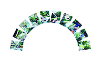
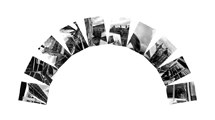
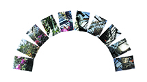
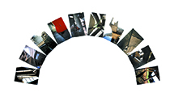
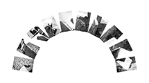
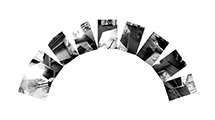
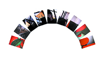
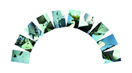

Jean-christophe Galmiche
reportages
plante photographique
divers
information
description
plante
séries
Escalier immeuble

Parc Chazière

Opéra de Lyon

Serre parc tête d'or

Couvent de la Tourette

Quartier part-dieu

Parc de la tête d'or

Fire station

Notre Dame du Haut